I build models that change how factories run. With 8+ years in industry (3M, Schaeffler) and a Ph.D. in
Mechanical Engineering, I combine CFD, FEA and heat transfer modeling with machine learning to create
digital twins and AI-guided process control that engineers and operators use every day.
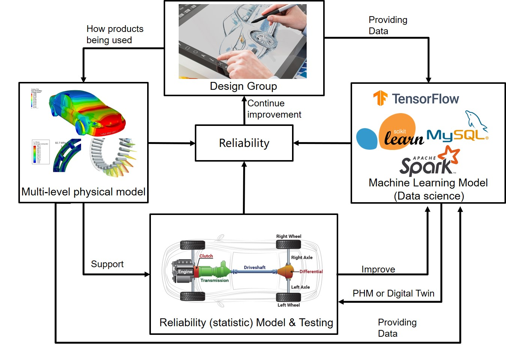
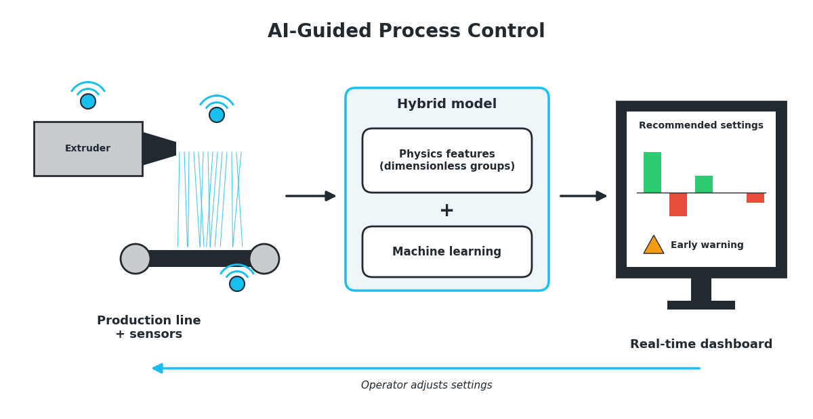
Production lines that make meltblown nonwovens have historically relied on operator experience to
start up and change over. I developed a real-time recommendation tool that combines
dimensionless analysis with machine learning to guide operator settings and warn of
problems early, and deployed it on a production line with live dashboards.
Found a lower-temperature operating window: ~2–3% energy savings, 10–20% longer die life,
and hundreds of production hours freed each year.
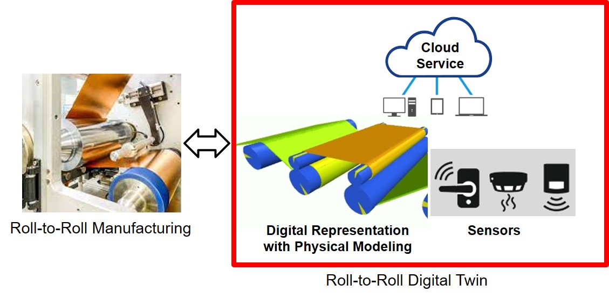
I build and maintain thermal and web-handling digital twins for several pilot and plant lines,
connected to live sensor data and hosted on a cloud model platform. Engineers use them to run
"what-if" virtual experiments instead of expensive pilot-line trials. The work covers thermal
management, air-flow and pressure control, cooling-roll sizing and structural reliability.
Trained engineering teams to replace pilot runs costing $1.5k–$3k per hour with model-based validation.
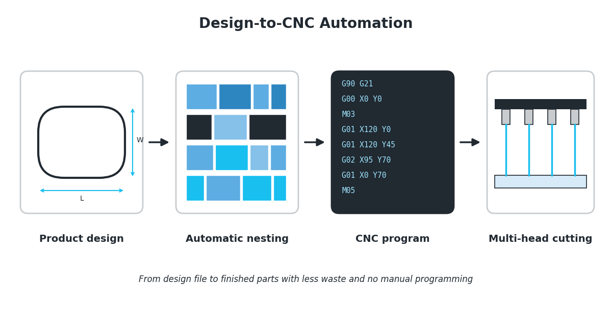
For a new abrasive belt product, I built a cloud-based tool that turns product designs directly
into CNC-ready programs for a multi-head waterjet cutter, with automatic nesting to minimize
material waste. I also used FEA to make the belt's joint design more robust, and supported the
system through factory and site acceptance testing into production.
Raised line OEE from 65% to 75% while reducing manual labor.
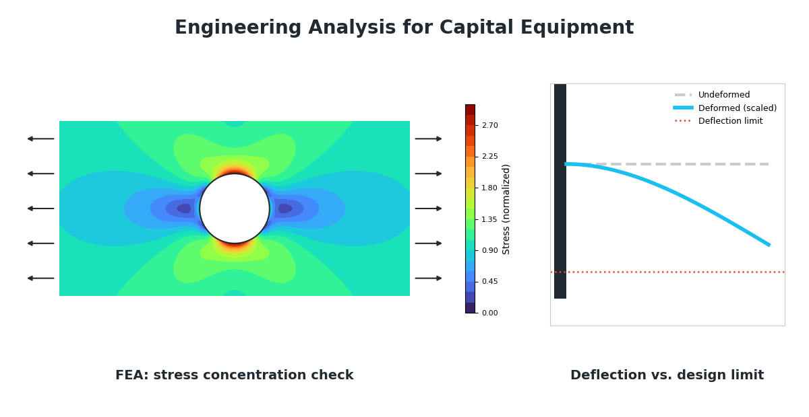
I'm the go-to structural and thermal analyst for equipment upgrades and new designs at plants in the US and
Europe. Using FEA, CFD and heat transfer analysis, I check designs for deflection, stress and
thermal limits before they're built, and lead safety-focused redesigns that remove known failure modes.
Helped protect multi-million-dollar product lines and remove serious safety risks.
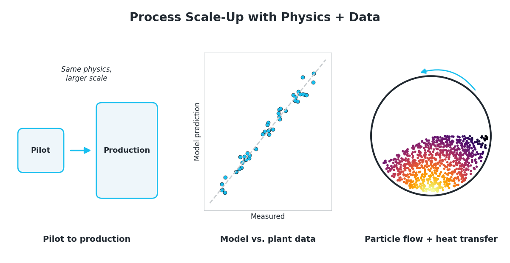
Scaling a process from pilot to production is where small physics surprises become expensive.
I combine thermal and process modeling with statistical analysis of production data to find
the parameters that matter, and use particle-flow (DEM) and burner heat-transfer simulation
to understand capacity limits in high-temperature equipment.
Guided a production scale-up in Europe and cleared capacity bottlenecks.
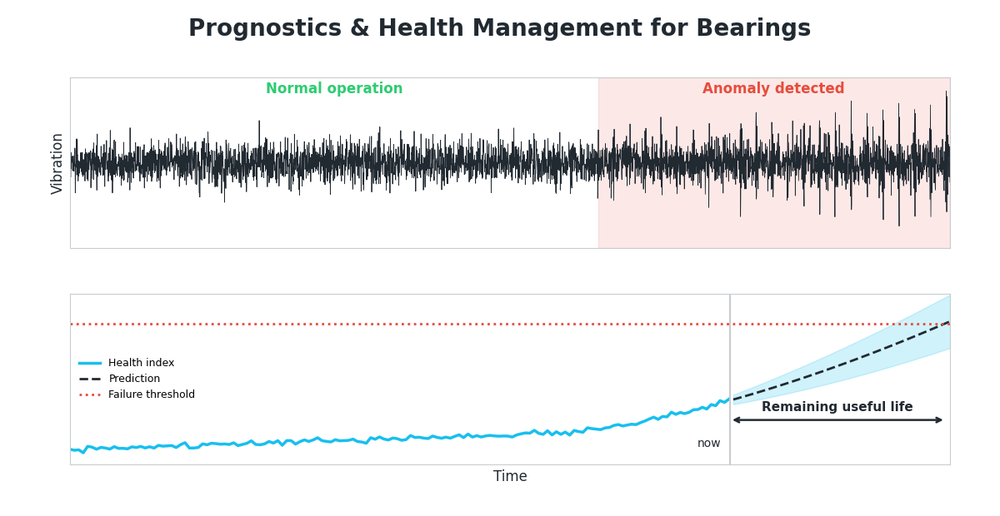
As a Test Validation Engineer, I designed reliability test plans for global product certification
and led root cause analysis and FMEA. I applied tribology-informed machine learning to detect
bearing faults and predict remaining useful life from vibration and high-frequency acoustic
emission signals (20 kHz–1 MHz).
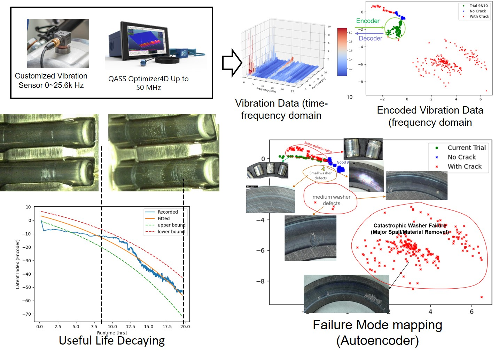
At the system level, a bearing fault produces a weak signal that's easily buried under noise from
nearby equipment, so conventional frequency analysis struggles. This project uses an
autoencoder trained on historical data to flag abnormal behavior and track damage over time.
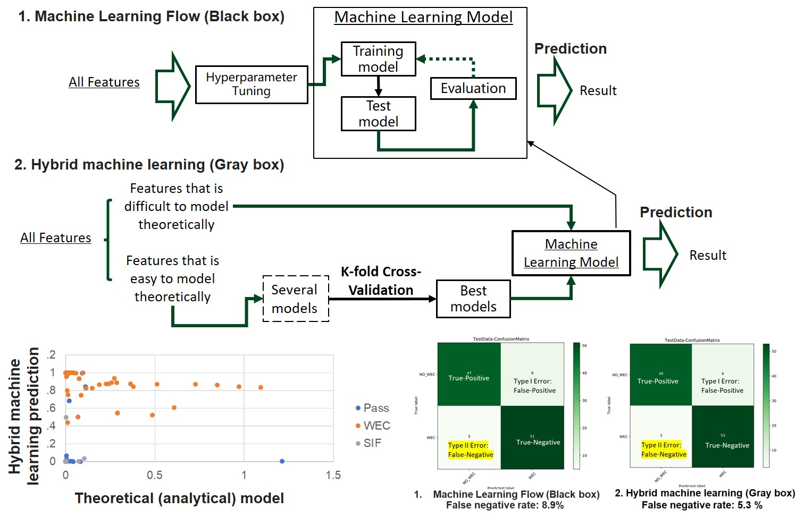
Pure black-box ML needs a lot of data and tends to overfit. Building fast analytical (physics) models
into the learning process gives better accuracy and lower overfitting risk, which matters most when
data is scarce or expensive to collect. This idea underpins most of my industrial work.
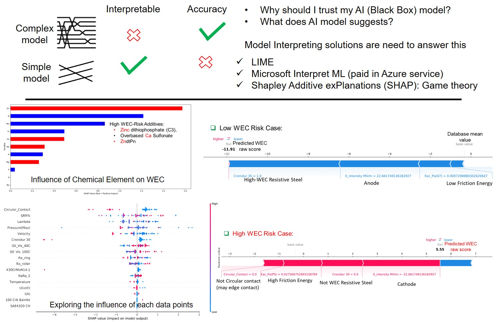
Engineers need to trust a model before acting on it. Explainability tools such as SHAP show how much each
feature contributes overall and how individual data points drive a prediction. That supports sanity
checks of the model and data, and gives concrete design feedback that reduces risk.
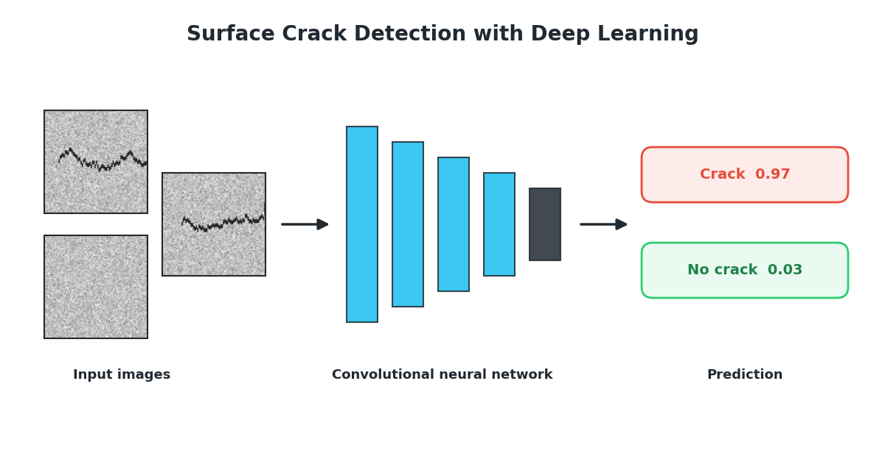
Compares convolutional neural network models for automatically detecting surface cracks in images,
a building block for automated visual inspection.
Ph.D. • University of Akron
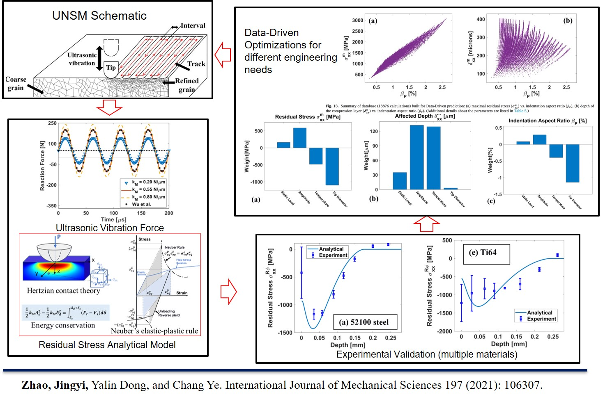
FEA of ultrasonic peening takes a long time to run, and the process has many interacting parameters.
I developed an analytical model of residual stress, strain and roughness that agrees well with
experiments, and paired it with data-driven prediction and optimization to recommend process settings.
Ph.D. • University of Akron
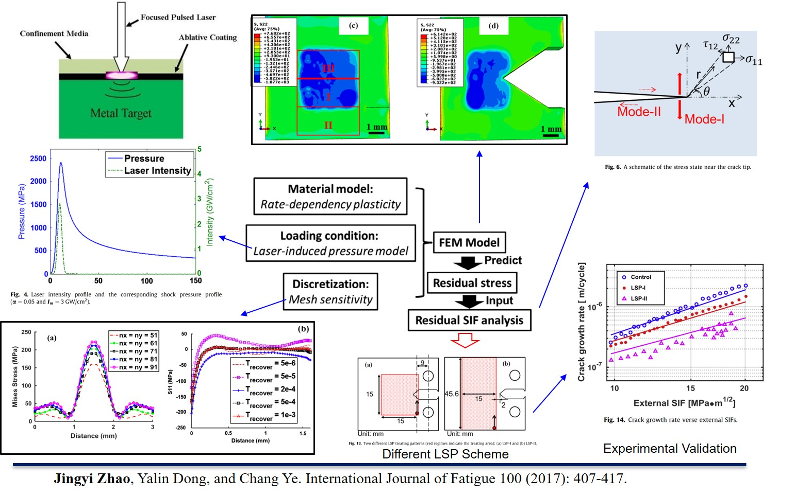
Laser shock peening adds compressive residual stress that slows crack growth. I built an FEA model that
combines a high-strain-rate material model, laser–plasma interaction and mesh sensitivity
analysis, and used stress intensity factors to evaluate the fatigue improvement.
Ph.D. • University of Akron
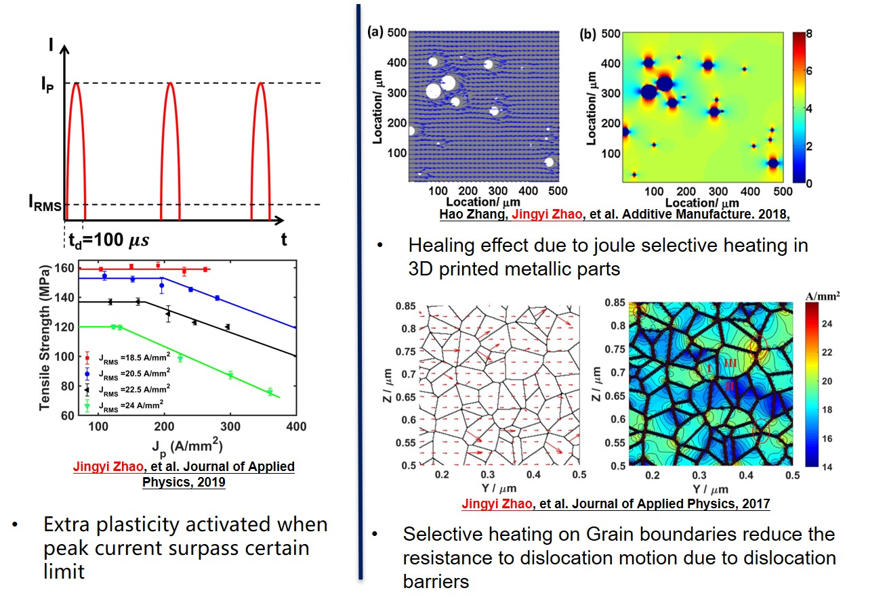
Electric current concentrates at grain boundaries, pores and phase interfaces, which causes selective
heating. A cellular automata model that solves Maxwell's equations at the microstructure scale
quantifies this effect, which can ease dislocation motion and heal pores in 3D-printed metals.
Ph.D. • University of Akron
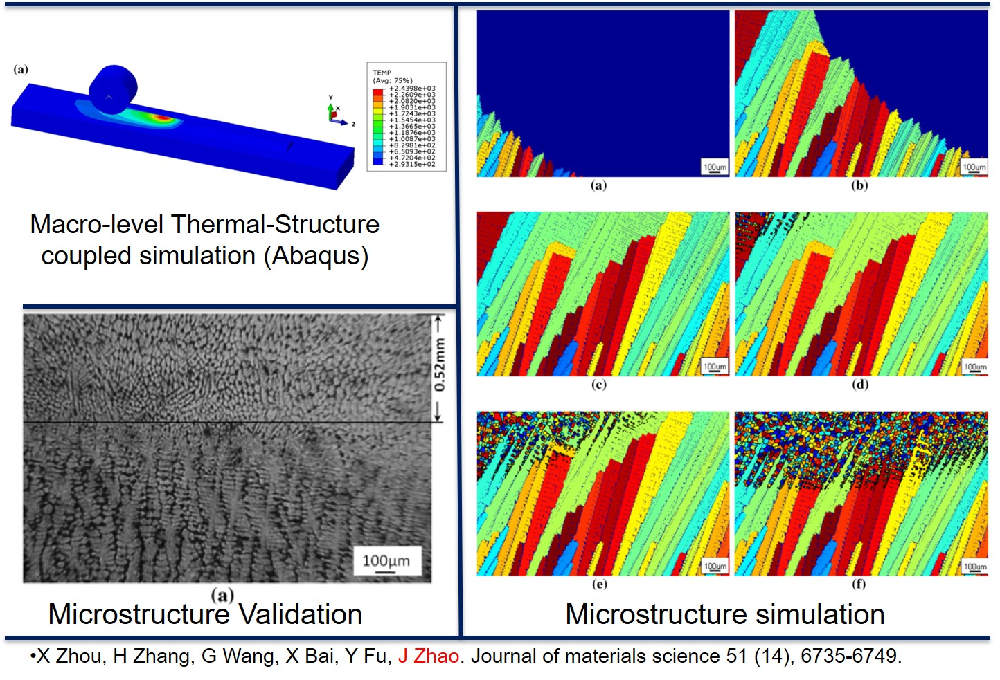
This work combines 3D printing with deep rolling to reduce porosity and refine grain structure.
It's supported by multiscale simulation of macroscopic thermal behavior, plus microscopic
solidification and recrystallization.
Ph.D. • University of Akron
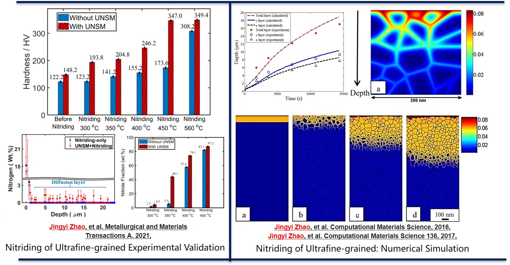
Combining ultrasonic surface treatment with nitriding gives much higher surface hardness than either
process alone. I modeled the thermodynamics and kinetics to predict how the nitride layer grows,
guiding a new low-temperature nitriding technique.
Ph.D. • University of Akron
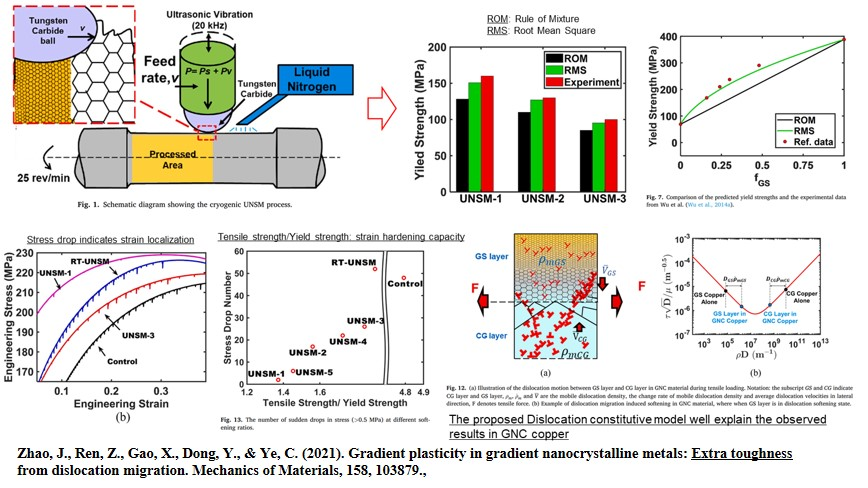
Gradient nanocrystalline materials stay ductile at high strength. I explained why from a
dislocation-dynamics perspective and validated the explanation experimentally, giving guidance for
designing lightweight structural materials.
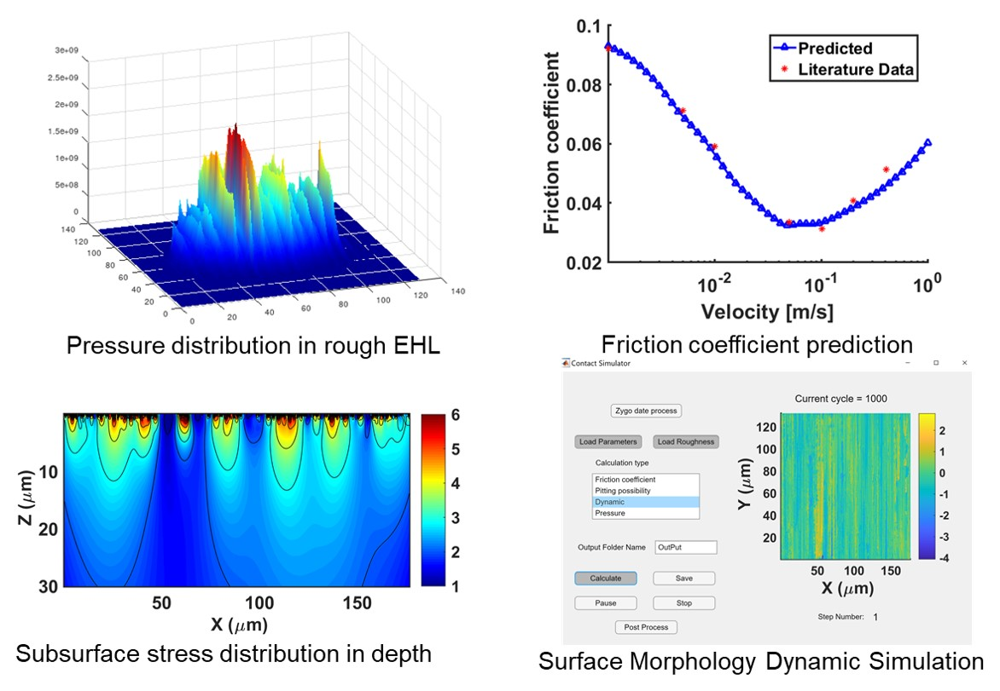
Predicted lubrication, friction, wear and fatigue of precision parts using measured surface
topography. A fast, stable conjugate-gradient FFT contact solver handles rough-surface and
asymmetric contact with random geometry.
Patents
- 2 U.S. patent applications in manufacturing technology (filed / in preparation)
Selected Publications
- Zhao, J., Dong, Y., Ye, C. (2021). Optimization of residual stresses generated by ultrasonic
nanocrystalline surface modification through analytical modeling and data-driven prediction.
Int. J. Mechanical Sciences, 106307.
[link]
- Zhao, J., Ren, Z., Zhang, H., Wang, G.-X., Dong, Y., Ye, C. (2019). Electroplasticity in AZ31B subjected
to short-duration high-frequency pulsed current. J. Applied Physics, 125(18), 185104.
[link]
- Zhao, J., Dong, Y., Ye, C. (2017). Laser shock peening induced residual stresses and the effect on crack
propagation behavior. Int. J. Fatigue, 100, 407–417.
[link]
- Zhao, J., Wang, G.-X., Dong, Y., Ye, C. (2017). Multiscale modeling of localized resistive heating in
nanocrystalline metals subjected to electropulsing. J. Applied Physics, 122(8), 085101.
- Zhao, J., Wang, G.-X., Ye, C., Dong, Y. (2017). A numerical model coupling diffusion and grain growth in
nanocrystalline materials. Computational Materials Science, 136, 243–252.
- Zhao, J., Wang, G.-X., Ye, C., Dong, Y. (2016). Cellular automata modeling of nitriding in nanocrystalline
metals. Computational Materials Science, 118, 342–352.
Skills
| AI & ML | Physics-informed ML, dimensionless-group features, Bayesian optimization, explainability (SHAP, PCA), anomaly detection, predictive maintenance, LLM and agent workflows |
| Simulation | Digital twins, CFD, FEA, heat transfer, particle (DEM) modeling, contact mechanics, roll-to-roll web handling |
| Software | Python, R, C++, SQL; real-time dashboards (Grafana); cloud-hosted model apps; CAM and CNC/G-code automation |
| Tools | Ansys (Fluent, Mechanical, Rocky), Abaqus, CAD/CAE |
| Manufacturing | Scale-up and tech transfer, OEE and yield improvement, design of experiments, FMEA, root cause analysis |
Education
- Ph.D., Mechanical Engineering, The University of Akron (2018)
- M.S., Materials Process Engineering, Huazhong University of Science and Technology (2014)
- B.S., Material Science, Hefei University of Technology (2011)